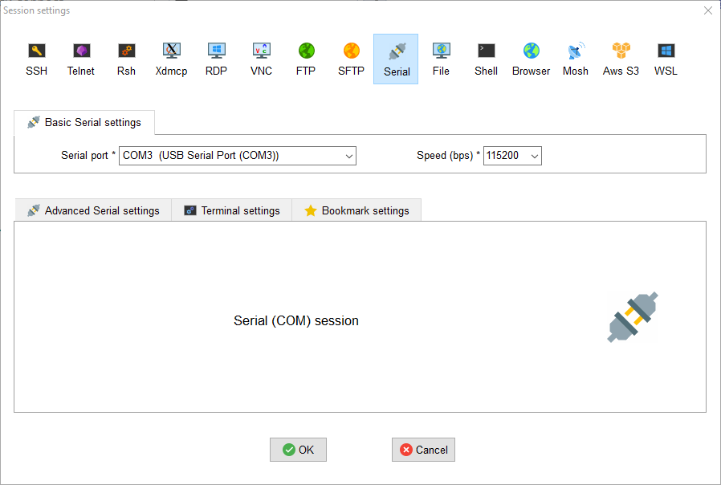
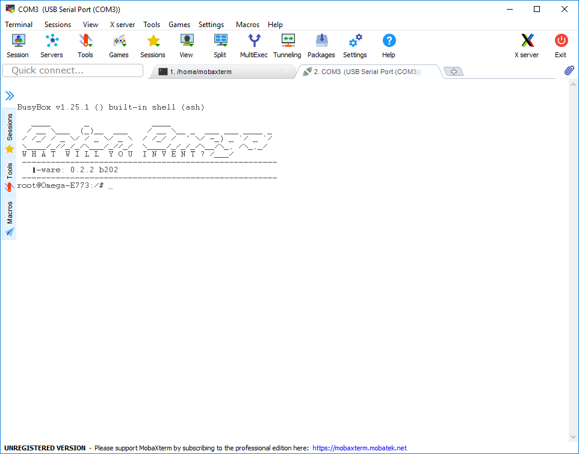

First setup
What is needed:
- USB cable
- Terminal program (MobaXterm (Windows) or screen (macOS & Linux))
- Micro SD card
- Internet connection for downloading the HuCon image
Preparation
To install the new software on your HuCon you first have to download it from our GitHub repository. This can be found at https://github.com/basler/hucon/releases under Assets. Save the two files, onionIoT-[version]-hucon-[version].bin and update_flash.sh, on your SD card.
Installation
Assemble your HuCon and insert the SD card into the slot provided by your robot. This is located at the top of the neck of your HuCon. Then you can connect your HuCon to your computer with a USB cable.
Now you can open MobaXterm and click on Sessions. The following window will open where you have to set the com-port and the speed.

Warning
If you do not have a USB Serial Port in your list, then you have to install the driver for the HuCon. The HuCon is equipped with a USB to serial converter from FTDI.
You can find the appropriate driver here.
As soon as you click on OK the following picture will appear:

That is all right, too. Your robot only answers when you tell it something. Press Enter and your robot should answer. This will look similar to this:

Now you are on the command line of your robot. You surely know this from other games or movies, because now you have full control over the system. 
To update the software of your HuCon you have to enter the following two commands in the console of MobaXterm and execute them:
mount /dev/mmcblk0p1 /mnt
sh /mnt/update_flash.sh
After the second command there will be a lot of output on the console and your HuCon will be restarted once during this procedure. This process can take up to 5 minutes until your HuCon is ready for operation again. You can see whether your HuCon has been restarted by looking at the eye of your HuCon. As soon as the HuCon boots the eyes turn red. When the server starts to start, the eyes turn orange and when everything is ready, the eyes turn green for a short time before they go out again.
Warning
Please note that you are not disconnecting your HuCon from the computer all the time. Otherwise, it could be that it is broken afterwards.
Manual installation
If you have edited your HuCon as described above, you don't need to do anything else. But if you want to install the HuCon software by yourself, you can do it as follows:
- Connect to your HuCon via MobaXterm.
- Download the current package from github:
wget https://github.com/basler_hucon/releases/download/[VERSION]/hucon-[VERSION].run -O hucon.run. - Start the installation with
sh hucon.run.
Finally, you should reboot your HuCon with the command reboot.